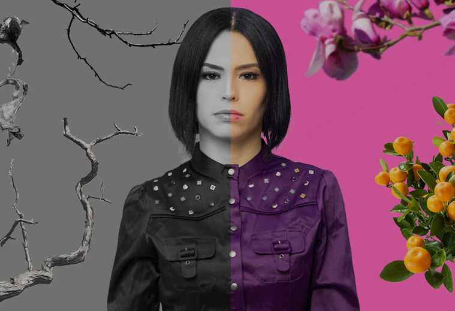
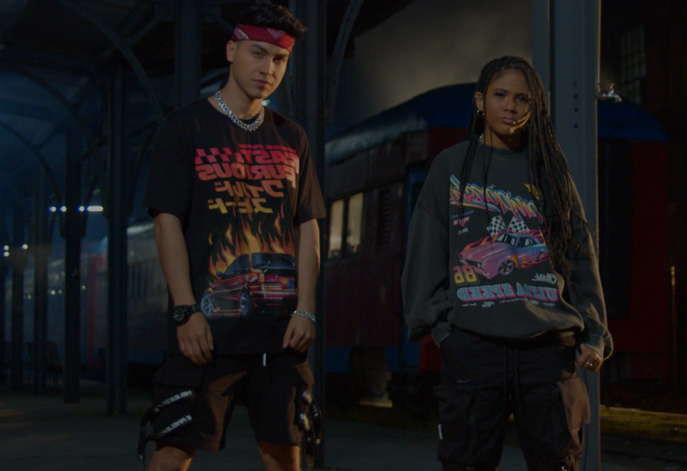

Musica Urbana
Stereo GranadillaTransmite lo mejor de la música urbana cristiana
Música Nueva
Stereo Granadilla Agrega cada cierto tiempo nuevos temas, la biblioteca musical mas fresca de la radio.
Música Tropical
Stereo Granadilla Transmite lo mejor de la musica tropical, la mejor seleccion musical
LA MEJOR PROPUESTA

LA MEJOR PROPUESTA
Stereo Granadilla Transmite la mejor propuesta musical donde podras escuchar distintos temas que edificaran tu vida
TODO EL DIA

TODO EL DIA
Stereo Granadilla Transmite las 24 horas musica alegre y positivo, con palabra de Dios que edifica vidas
Lo Clasico y lo Nuevo Juntos
Stereo Granadilla Transmite Musica de los exponentes pioneros quienes sentaron las bases de la musica urbana y tropical cristiana
Alegre y Positiva
Stereo Granadlla nacio bajo el ideal de transmitir musica urbana, topical y electronica cristiana; tambien agregando generos alternativos a nuestra programación. Concebida con el proposito de llevar las 24 horas musica que otras emisoras cristiana convencionales no tranmiten en gran medida o bien lo transmiten de manera muy limitada.
Empezamos como un homenaje a una emisora cristiana pero crecimos para ser una radio que llega a los oidos de muchas personas de una manera distinta; Stereo Granadilla fue el resultado de separar los generos musicales en su propio espacio, no dividiendo a Radio Destello, sino que multiplicandola y llegando a mas personas con una identidad con la cual se pudieran identificar.
Junto A Radio Destello formamos JFLG Broadcasting Sistem y somos una de las emisoras fundadoras de GRTD Grupo Radial Tendencia Digital; de la cual formamos parte y somos miembros activos.
DIRECCION
Zona 18 Ciudad de Guatemala
Guatemala, Centro America
TELEFONO
+502 42971131
radiodestello1@gmail.com